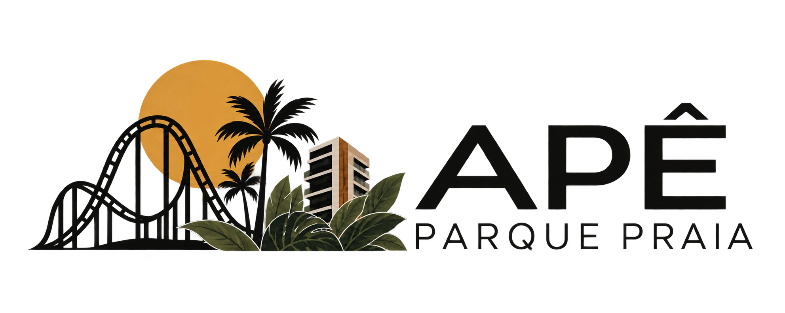

Menu
GUIA DO HÓSPEDE
Boas-vindas
Check-in
Regras básicas
Endereços
Praias
Locais importantes
Cozinha
Sacada
PENHA · SANTA CATARINA
Um mar de
bons momentos.
Praias Penha SC
Principais Praias com Selo Bandeira Azul
(Qualidade Ambiental)
Melhores para Famílias e Crianças
(Águas Calmas)